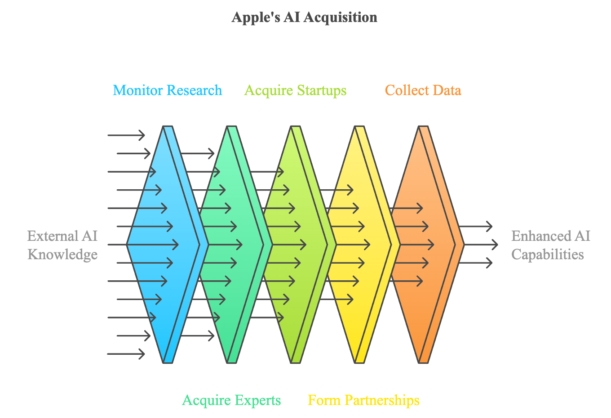
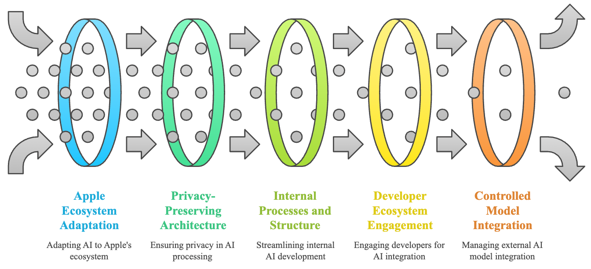
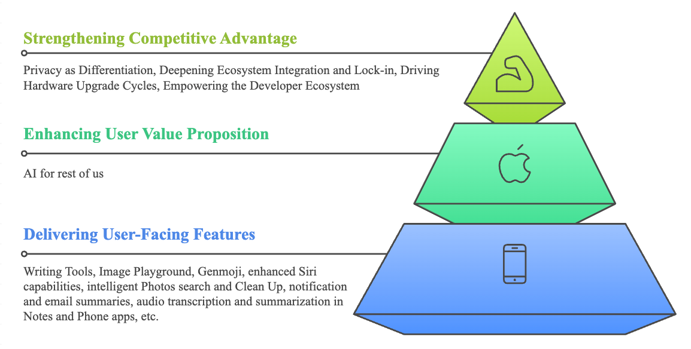
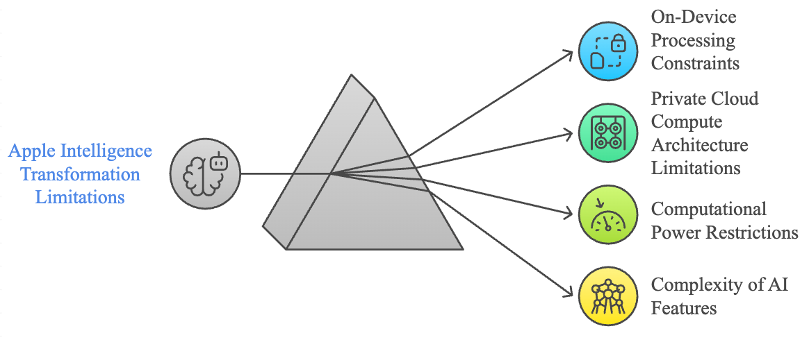
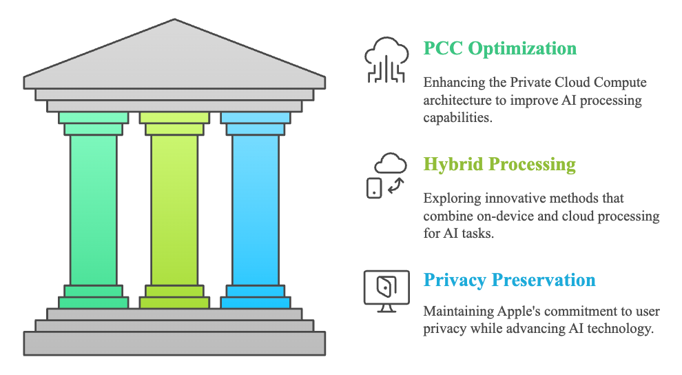

Apple Intelligence can be read as a strategic manoeuvre rather than a simple feature launch. After the public acceleration of generative AI, Apple needed to respond without abandoning the principles that made its ecosystem valuable: privacy, device integration, interface control, and hardware-software coordination.
Why absorptive capacity matters
Absorptive capacity describes a firm's ability to recognise the value of external knowledge, assimilate it, transform it, and apply it commercially. For Apple, the challenge was not simply whether it could build AI models. The deeper question was whether it could absorb fast-moving external AI knowledge and translate it into a product logic consistent with the Apple ecosystem.
Apple Intelligence can be read as a response to this challenge. It combines on-device intelligence, Private Cloud Compute, developer tools, OpenAI integration, and ecosystem-level adaptation. This is not a pure open AI strategy; it is selective openness under controlled integration.
Acquiring external AI knowledge
Apple's knowledge acquisition appears in several forms: monitoring AI research, acquiring startups, recruiting experts, forming partnerships, and collecting ecosystem data. Prior acquisitions such as Voysis and Xnor.ai can be interpreted as attempts to strengthen natural language, edge AI, and on-device intelligence capabilities.

The important point is that external AI knowledge does not enter Apple unchanged. It is filtered through Apple's product philosophy: privacy, integration, usability, and control over the user experience.
Transforming AI into ecosystem value
The transformation stage is where Apple Intelligence becomes strategically distinctive. Apple adapts AI to its hardware base, privacy-preserving architecture, internal processes, developer ecosystem, and controlled model integration. This creates a personal AI proposition that is less about standalone chatbot performance and more about contextual usefulness across devices and apps.

Writing Tools, image generation, enhanced Siri, Photos search, notification summaries, email summaries, transcription, and app-level intelligence are examples of AI being converted into everyday utility. In strategic terms, the value lies in making AI an extension of the existing ecosystem rather than a separate destination.

Strategic constraints
The same choices that make Apple Intelligence distinctive also create constraints. On-device processing depends on hardware capability. Private Cloud Compute must balance capability expansion with privacy promises. Feature complexity can delay rollout and increase user-expectation risk. Older devices may not receive the full benefits, which can slow ecosystem-wide impact.

This makes expectation management central. If the promise of personal AI moves faster than the actual rollout, the gap can weaken trust. Apple therefore needs to coordinate product capability, developer readiness, and user communication with unusual precision.
Strategic suggestions
The recommended direction is not to abandon Apple's controlled approach, but to make it more agile. First, Apple should accelerate AI knowledge acquisition and assimilation through external partnerships, developer engagement, and faster integration routines. Second, it should optimise Private Cloud Compute while exploring hybrid processing models that combine on-device and cloud intelligence. Third, it should protect privacy as a differentiator while communicating rollout boundaries more clearly.

The strategic opportunity is significant: if Apple can absorb external AI knowledge faster while preserving its ecosystem logic, Apple Intelligence can strengthen user value, deepen lock-in, encourage hardware upgrades, and empower developers. If it cannot, the strategy risks becoming too slow for a market where AI capability and user expectations are evolving rapidly.